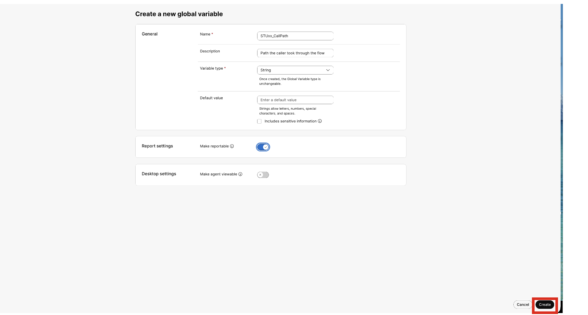
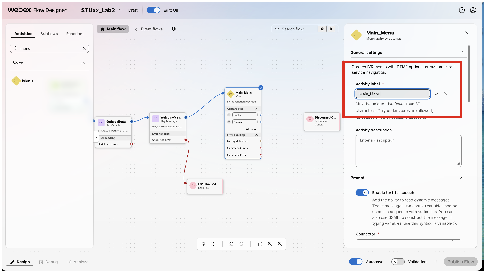
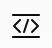

Lab 2 – DTMF IVR Menu
Objectives:
- Recreate the CCE script template’s DTMF menu using native WxCC flow building elements.
- Understand the differences between global variable and flow variables relative to CCE global variable and peripheral/ECC variables.
- Create and use global variables and flow variables.
- See basic tracing and debugging of flows in WxCC and compare to monitoring a CCE script.
Prerequisites:
- Complete Lab 1
Instructions: Lab 2
- Create a reportable Global Variable for tracking
- We will insert in our flows to start tracking and will show how to report on it in a later lab.
- From the Left Menu --> Under the Customer Experience Section --> “Click on Flows”
- Click on “Global Variables” tab
- Click on “Create a global variable”
{kind=link}
- Click “Create a global variable” button in the upper right
- Name: STUxx_CallPath
- Description: “Path the caller took through the flow”
- Variable type: String
- Report settings: Make Reportable
- Click “Create”

- Build 2nd flow
- Copy flow you created in lab 1A
- Click the … for STUxx_Lab1 and select “Copy”
{kind=link}
{kind=link}
- Open the newly-copied flow named “Copy_STUxx_Lab1_...”
- Toggle the “Edit” slider to edit the flow
- Rename/Edit name the flow to “STUxx_Lab2”
{kind=link}
- Save new name
{kind=link}
- Click in open area to bring up Global Flow properties
- Update the flow description: “Flow for Labs 2 and 4”
{kind=link}
- Add a flow variable
- Under the “Variable definition” click “Create flow variables”
{kind=link}
-
- Name: menu_selection
- Description: Track the option selected from the menu.
- Variable type: String
- Default value: (leave blank)
- Enable “Agent Viewable”
- Desktop label: “Caller Intent”
- Click Create
{kind=link}
- Create a second flow variable
- Click Create flow variables
- Name: ni_nm_counter
- Description: Track the no input and no matches.
- Variable Type: Integer
- Default value: 0
- Click Create
- Under Global variables click on “+ Add global variables”
- Select your “STUxx_CallPath” with xx matching your student number, and both existing “TransferDestination” and “TransferResult” global variables
- Click “Add”
{kind=link}
- Under the Search activities on the left hand side of the Flow Designer 🡪 Search for “Set Variable”
{kind=link}
- Move the NewPhoneContact node to the left to make some room between it and the WelcomeMessage node. Then drag a Set Variable node between the NewPhoneContact node and the WelcomeMessage node
- Delete the path from the NewPhoneContact to the WelcomeMessage
{kind=link}
- Connect the NewPhoneContact exit to the new Set Variable Node.
{kind=link}
- Click on the new Set Variable Node
- Rename the node/change the Activity label: SetInitialData
- Description: Set or initialize and variables for use later.
{kind=link}
-
- Under “Variable settings“ select “STUxx_CallPath” from the drop down
- Set value: “STUxx_Lab2_IN” replacing xx with your student number
{kind=link}
- Connect SetInitialData success exit path to WelcomeMessage node
{kind=link}
- Click on the “WelcomeMessage” node
- Change 1st TTS message: “This is my flow for lab 2”
- Delete the 2nd TTS message
{kind=link}
- Clear the “Search Activities” field and add a new Menu Node after the WelcomeMessage
- Delete the success path out arrow of the Welcome Message and connect to new Menu Node
- Select Menu Node
{kind=link}

{kind=link}
{kind=link}
-
- Expand the “Custom menu links” section
- Select Digit Number “1” from pull down.
- Name the option in Link Description “English”
- Click “+Add new”
- Select Digit Number “2” from pull down.
- Name the option in Link Description “Spanish”
{kind=link}
- Drag a “Set Variable” Node on to the Flow Designer Canvas after the Menu
- Connect “English” to this set variable node
- Click on the Set Variable Node
- Rename the node/change the Activity label: SetVar_Opt1
- Description: (Optional)
- Under the Variable settings select “menu_selection” variable from the drop-down menu
- Set value: “English”
{kind=link}
- Click “+ Add new” under Variable settings to set another variable
- Select “STUxx_CallPath” variable from the pulldown
- Set value:
{{STUxx_CallPath}}.english - Feel free to test with test expression icon

, entering STUxx_Lab2_IN from the SetInitialData node as the value for STUxx_CallPath
{kind=link}
{kind=link}
- Right click on “SetVar_Opt1” and copy. If the browser prompts you to approve, click Allow.
- Right click mouse in open space under “SetVar_Opt1” and “paste”
- Rename the node/change the Activity label: SetVar_Opt2
- Description: (Optional)
- For variable “menu_selection”
- Set value: “Spanish”
- For variable STUxx_CallPath, set value:
{{STUxx_CallPath}}.spanish - (Feel free to test with test expression icon)
- Connect Main_Menu option 2 path to new “SetVar_Opt2” node
{kind=link}
- Drag a “PlayMessage” node to canvas
- Connect the success paths of both “SetVar” nodes to the new PlayMessage Node
{kind=link}
- Open the PlayMessage node
- Rename the node/change the Activity label: Play_Option_Selection
- Select Enable text-to-speech
- Select “Cisco Cloud Text-to-Speech” from Connector pull down
- Click “Add text-to-speech message” button twice
- Click trashcan to delete audio file entry
- In the first text-to-speech message: You picked {{ menu_selection }} path.
- In the second text-to-speech message: This was option
{{Main_Menu.OptionEntered}}
- Connect the exit of the PlayMessage node to the DisconnectContact Node
{kind=link}
- Menu Error Path build
- Drag another PlayMessage node to the canvas
- Connect the Main_Menu node “No-Input Timeout” and “Unmatched Entry” to the new PlayMessage node
- Click on PlayMessage node
- Rename the node/change the Activity label: Play_Menu_Error
- Select Enable text-to-speech
- Select “Cisco Cloud Text-to-Speech” from Connector pull down
- Click “Add text-to-speech message”
- In the text-to-speech message: “Your entry was not recognized” (no quotes)
- Click trashcan to delete audio file entry
{kind=link}
- Drag a Set Variable node to the canvas
- Connect the outbound of the “Play_Menu_Error” node to the newly-added Set Variable node
{kind=link}
- Click on the Set Variable Node
- Rename the node/change the Activity label: Increment_NI_NM_Counter
- Description: (Optional)
- Select “ni_nm_counter” variable from the drop down menu
- Set value:
{{ni_nm_counter+1}} - Click on formula test icon in set value box (looks like </>)
- Press “Test expression”. Should see Test Result of 1
- Change the ni_nm_counter to 5
- Press “Test expression”. Should see Test Result of 6
- Press “Apply changes” or “Close” if no changes were made
{kind=link}
- Drag a “Condition” node to the canvas
- Connect the outbound of the Increment_NI_NM_Counter node to the new condition node
{kind=link}
- Click on the new Condition Node
- Rename the node/change the Activity label: Check_NI_NM_Counter
- Description: (Optional)
- Set Condition Expression to value:
{{ni_nm_counter>2}} - Click on formula test icon in set value box (looks like </>)
- Press “test Expression”. Should see Test Result of “false”
- Change the ni_nm_counter to 5
- Press “Test expression”. Should see Test Result of “true”
- Press “Apply changes” or “Close” if no changes were made
{kind=link}
- Connect the “True” path of the Condition node to the DisconnectContact Node
{kind=link}
- Connect the “False” path back to the Main_Menu node. If you aren’t able to see both on the screen at once, you can zoom out with CTRL + the mouse wheel or by clicking the a the bottom of the screen.
{kind=link}
{kind=link}
- Enable Validation at the bottom-right
- Resolve any errors
- Publish Flow
- In Control Hub 🡪 Channels rename your Entry point from STUxx_Lab1_EP to STUxx_Lab2_EP
- Change your “Routing Flow” dropdown from “STUxx_Lab1” to “STUxx_Lab2”
- Click Save
{kind=link}
- Make three (3) calls into your flow and test the Main_menu paths
- For the 1st call – select option 1 and listen to the prompts
- For the 2nd call – select option 2 and listen to the prompts
- For the 3rd call – do not select an option and listen to the prompts
Bonus Exercise (Time Permitting)
- Navigate back to your STUxx_Lab2 browser tab
- Select Analyze at bottom left side of the screen
{kind=link}
- Click “Last 15 minutes” under the “Set the date and time range for your data” section
- Take note of the date and time range options
- Click on Main_Menu node to drill down
- For the interaction with outcome “error” -> Click on “View in debug”
{kind=link}
- We are now in the Debug view for this call. Notice the animated “--- blue lines” show the path of this specific call through the flow
- In the list of activities on the bottom-left, select “Main_Menu” activity name showing outcome “Error”
- You should see No-input timeout = 3, matching our condition node logic
{kind=link}
- Optionally, look at other interactions that were successful
{kind=link}
- Select Design at bottom right to exit back to build